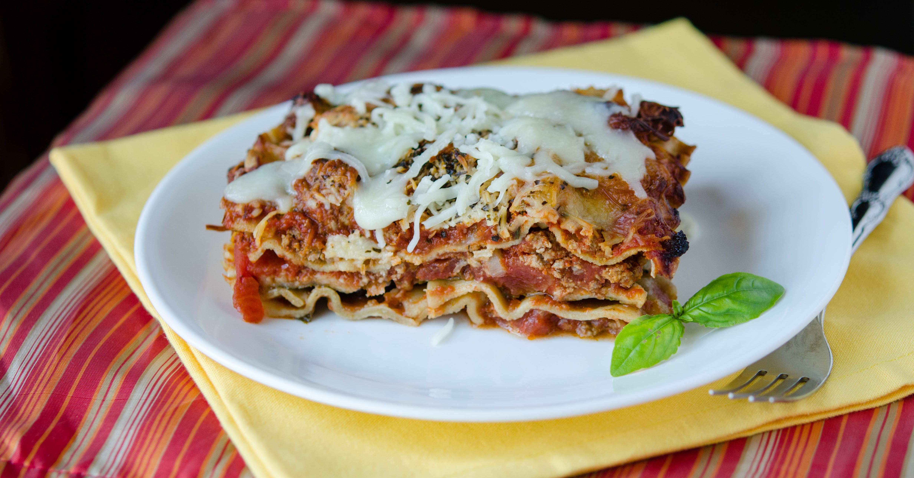

Lasagna

A delicious traditional lasagna recipe made with ground beef, Italian sauasage and
marinara sauce. Serve with garlic toast and salad.
Prep time: 20 minutes
Cooking time: 40 minutes
Total: 1 hour
Yields: 8 servings
Ingredients
- 1 pound ground beef
- 1 pound bulk Italian sausage
- 1/2 cup warm water
- 1 cup sliced black olives
- 1 pinch basil
- 2 teaspoons garlic powder
- 1 1/2 teaspoons dried sage
- 2 teaspoons ground black pepper
- 2 tablespoons minced garlic
- 1 tablespoon dried onion flakes
- 2 (14 ounce)jars marinara sauce
- 1 pound lasagna noodles
- 8 ounces ricotta cheese
- 1 pound mozzarella cheese, shredded
Directions
- Brown the ground beef and Italian sausage in a large skillet over medium-high heat.
Drain excess grease. Stir in the water and black olives, and season with basil,
garlic powder, oregano, sage, pepper, minced garlic, and onion flakes. Simmer for about 15 minutes,
stirring frequently. Stir in the marinara sauce, and remove from the heat.
- Preheat the oven to 375 degrees F (190 degrees C).
- Place a layer of the meat and sauce in the bottom of a 9x13 inch baking dish. Cover with
a layer of dry noodles. Spread a thin layer of ricotta cheese over the noodles, and sprinkle with a little mozzarella
cheese. Cover with another layer of sauce, and repeat layering ending with the meat and sauce on top.
Reserve about 1/2 cup of mozzarella cheese for later.
- Bake for 45 minutes in the preheated oven, but check after 30 minutes depending on how thick the lasagna is.
Lasagna is cooked when you can easily stick a knife into it. Sprinkle the reserved cheese
over the top, and return to the over for about 10 minutes for a nice melted cheese topping.
Nutrition Facts
- Per serving: 736 calories; 44g protein; 63g carbohydrates; 35g fat; 104mg cholesterol;
1453mg sodium.